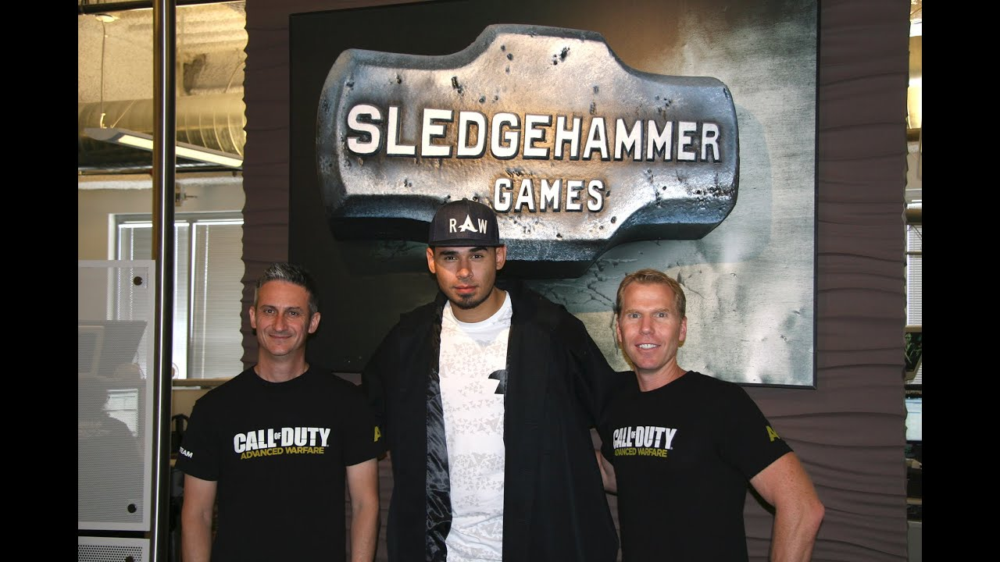
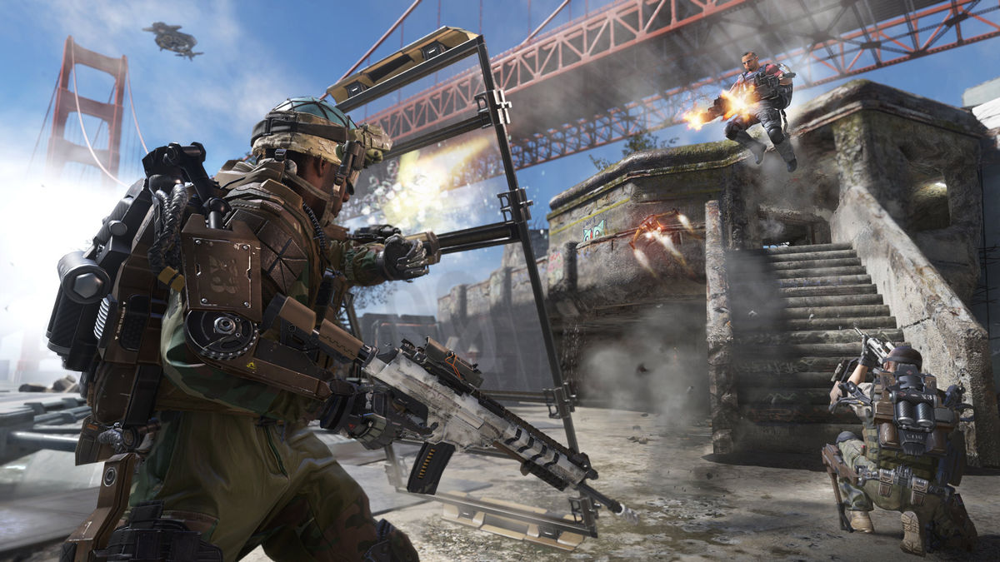

SledgeHammer Games – новички, которые пока выпустили только две части серии, а в этом году готовят свою третью игру. Свой путь они начали в 201-ом году, но сразу с помпой и размахом (об этом ниже). Студия была основана в 2009-ом году выходцами из Visceral Game, подарившей нам Dead Space, что очень заметно в Call of Duty от этой компании.

Синглплеер
Сюжетные кампании, в отличие от кампаний IW, не просто средненькие боевички, а настоящие голливудские блокбастеры: катсцены в дорогом CGI, моду на который ввели именно SHG с выпуском Advanced Warfare – их дебютной части серии, голливудские актеры первой величины на главных ролях, добротная киношная постановка – именно здесь и виден след разработчиков Dead Space (правда теперь они получили карт-бланш в виде нескончаемой суммы от издателя). Что же касается сюжета, то здесь тоже голливудские блокбастеры – просто, линейно, не слишком обременяюще мозг. Ты не потерял ничего важного, потратив восемь часов на прохождение, но и не получил тоже: просто приятно провел время.

Мультиплеер
Мультиплеер игр студии на самом деле серый и блеклый. Вторичный до мозга костей, а по исполнению местами является эталоном того, как делать не надо ни в коем случае: карты из World War II некоторые хардкорные фанаты до сих пор приводят в качестве примера худших карт в серии. А больше-то сказать и нечего. Шутерок на вечерок. Пару недель под пиво по два часика посидеть можно, но не более того.
